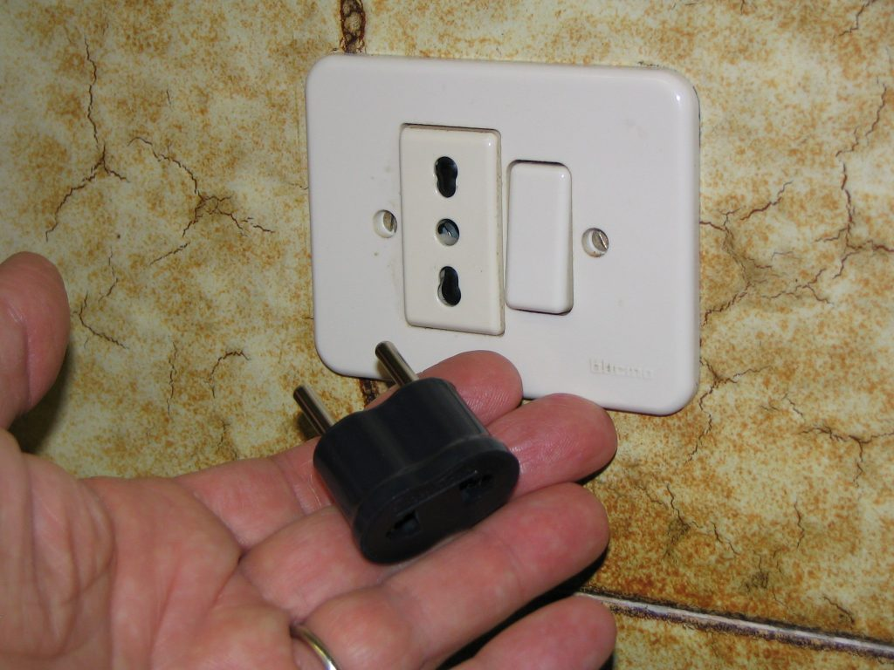

Photo by Paolo Tosolini
The voltage used in Italy is 220V. If you plan to take along any electronic device, it is advisable to also take your own voltage converter (trasformatore di corrente) and plug adapter (adattatore per la presa di corrente), which you can purchase before leaving your home country or you can easily find in any Italian hardware store (ferramenta) or major airports. In Italy they use both two- and three-prong units that often require adapters themselves. {This is an excerpt from chapter 12 “Units and conversions” of the eBook “Italy from the Inside. A native Italian reveals the secrets of traveling in Italy”. To buy our eBook click here}